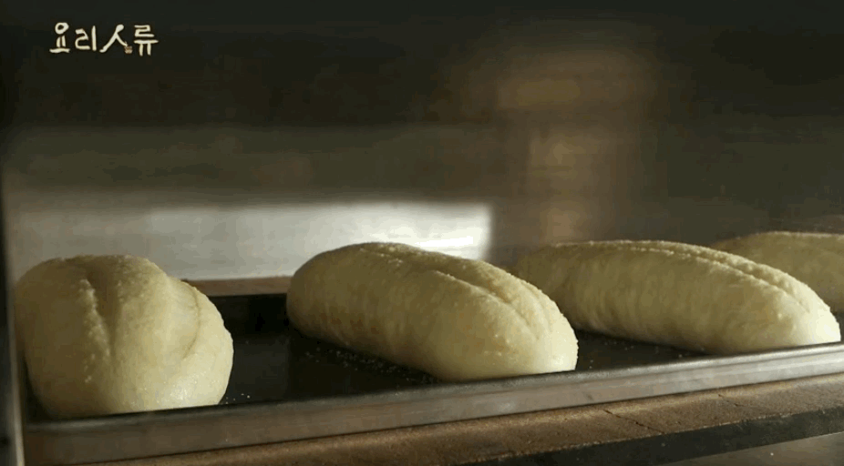
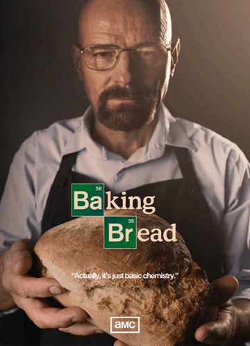
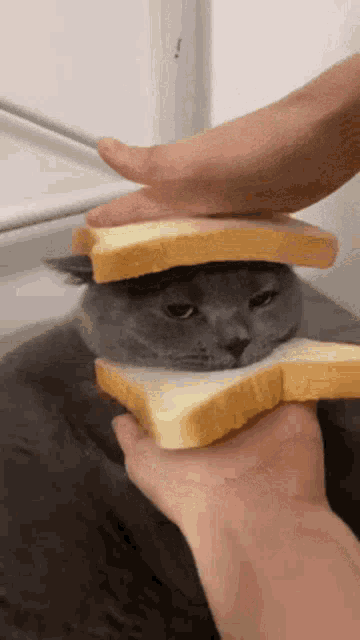

Хлеб — пищевой продукт, получаемый при выпечке теста, приготовленного как минимум из муки и воды, разрыхлённого пекарскими дрожжами или закваской. Рецептура хлеба часто содержит соль, сахар и жиры.
Для приготовления хлеба используют пшеничную и ржаную муку, реже — кукурузную, ячменную и другие. В некоторые сорта хлеба также добавляют специи, такие как зёрна тмина, орехи, изюм, чеснок, курагу и зёрнышки (семена кунжута, мака и другие). Зёрна служат и для украшения.
| История хлеба | Рецепт хлеба | Разновидности хлеба |
|---|---|---|
|  |  |  |